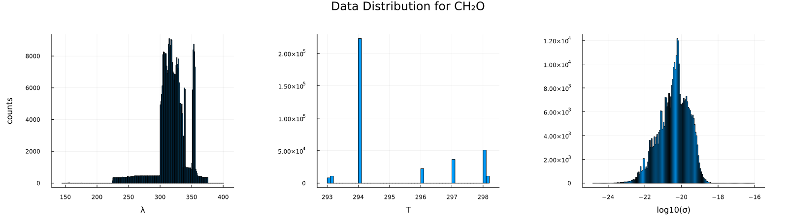
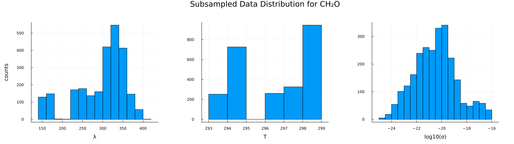
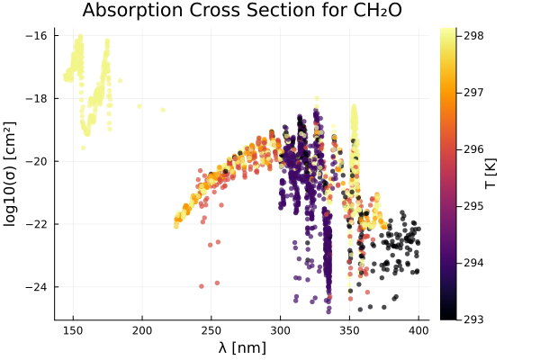
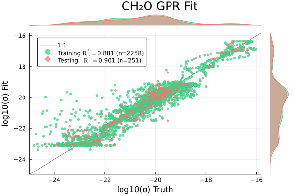
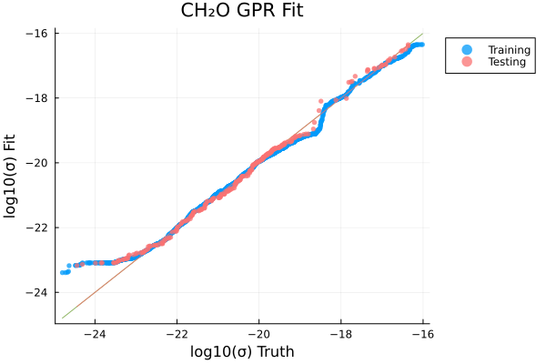
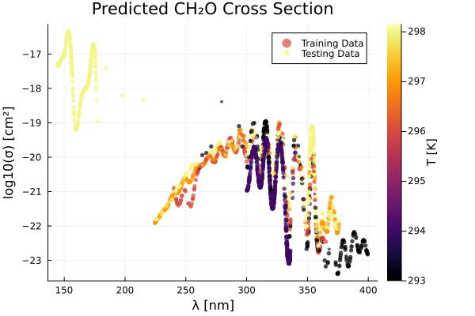
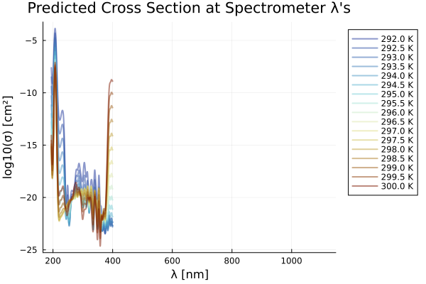
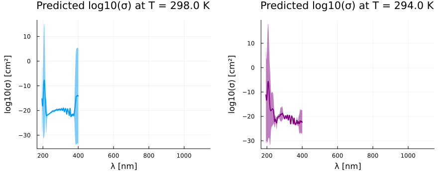

using Plots, MLPlotRecipes
using HDF5
using Tables, DataFrames, CSV
using MLJ, MLJGaussianProcesses
using StatsBase
using KernelFunctions
using ParameterHandling\(\mathrm{CH_2O}\) (Formaldehyde)
include("./utils.jl")predict_logσ_wΔh5_path = "../../data/photolysis_data.h5"
species = "CH2O"
nice_name = "CH₂O"
λs, σs, T1s, T2s, source_idx, T_units, category, formula, λ_units, σ_units = get_raw_data(h5_path, species)
println("max λ: ", maximum(λs))
println("min λ: ", minimum(λs))max λ: 2200.0
min λ: 6.223# load in spectrometer wavelengths
hr4000_df = CSV.File("../hr4000_wavelengths.txt") |> DataFrame ; Δλ = 50 # nm for padding
df = data_to_df(λs, σs, T1s, T2s, source_idx; λ_lb=minimum(hr4000_df.λ)-Δλ, λ_ub=maximum(hr4000_df.λ)+Δλ)
# df = data_to_df(λs, σs, T1s, T2s, source_idx; λ_lb=0.0, λ_ub=1200.0)
println(nrow(df))
describe(df)3620744×7 DataFrame
| Row | variable | mean | min | median | max | nmissing | eltype |
|---|---|---|---|---|---|---|---|
| Symbol | Float64 | Real | Float64 | Real | Int64 | DataType | |
| 1 | λ | 319.453 | 144.26 | 319.444 | 400.041 | 0 | Float64 |
| 2 | σ | 2.38324e-20 | 1.486e-25 | 4.6435e-21 | 9.64e-17 | 0 | Float64 |
| 3 | T | 295.063 | 293.0 | 294.0 | 298.15 | 0 | Float64 |
| 4 | source_id | 73.7087 | 3 | 90.0 | 104 | 0 | Int64 |
nskip = 5
p2 = scatter(
df.λ[1:nskip:end],
log10.(df.σ[1:nskip:end]),
zcolor=df.T[1:nskip:end],
ms=3,
msw=0,
xlabel="λ [$(λ_units)]",
ylabel="log10(σ) [cm²]",
alpha=0.7,
rightmargin=10Plots.mm,
colorbar_title="T [$(T_units)]",
title="Absorption Cross Section for $(nice_name)",
label="",
)
savefig("O3_p2.png")
display(p2)
p1 = histogram(df.λ, xlabel="λ", ylabel="counts", label="",)
p2 = histogram(df.T, xlabel="T", label="",)
p3 = histogram(log10.(df.σ), xlabel="log10(σ)", label="",)
#p3 = histogram(df.σ, xlabel="σ", ylabel="counts")
phist = plot(p1, p2, p3, layout=(1,3), size=(1600, 450), margin=10Plots.mm, plot_title="Data Distribution for $(nice_name)")
# load in spectrometer wavelengths
hr4000_df = CSV.File("../hr4000_wavelengths.txt") |> DataFrame ; # deal with identical wavelength records
gdfs = groupby(df, :T)
res_dfs = []
for gdf ∈ gdfs
gdf_by_λ = groupby(gdf, :λ)
push!(res_dfs, combine(gdf_by_λ, [:σ, :T] .=> mean, renamecols = false))
end
df_unique = vcat(res_dfs...)170034×3 DataFrame
170009 rows omitted
| Row | λ | σ | T |
|---|---|---|---|
| Float64 | Float64 | Float64 | |
| 1 | 258.75 | 2.13e-21 | 296.0 |
| 2 | 258.775 | 1.45e-21 | 296.0 |
| 3 | 258.8 | 1.93e-21 | 296.0 |
| 4 | 258.825 | 3.08e-21 | 296.0 |
| 5 | 258.85 | 4.0e-21 | 296.0 |
| 6 | 258.875 | 3.87e-21 | 296.0 |
| 7 | 258.9 | 4.73e-21 | 296.0 |
| 8 | 258.925 | 4.99e-21 | 296.0 |
| 9 | 258.95 | 4.97e-21 | 296.0 |
| 10 | 258.975 | 5.11e-21 | 296.0 |
| 11 | 259.0 | 4.75e-21 | 296.0 |
| 12 | 259.025 | 5.31e-21 | 296.0 |
| 13 | 259.05 | 4.63e-21 | 296.0 |
| ⋮ | ⋮ | ⋮ | ⋮ |
| 170023 | 375.89 | 7.2085e-23 | 297.0 |
| 170024 | 375.91 | 1.118e-22 | 297.0 |
| 170025 | 375.92 | 1.179e-22 | 297.0 |
| 170026 | 375.93 | 1.04543e-22 | 297.0 |
| 170027 | 375.94 | 9.105e-23 | 297.0 |
| 170028 | 375.95 | 9.305e-23 | 297.0 |
| 170029 | 375.96 | 9.33e-23 | 297.0 |
| 170030 | 375.97 | 7.3995e-23 | 297.0 |
| 170031 | 375.98 | 5.94e-23 | 297.0 |
| 170032 | 375.99 | 6.1065e-23 | 297.0 |
| 170033 | 376.0 | 8.44967e-23 | 297.0 |
| 170034 | 376.01 | 9.724e-23 | 297.0 |
# here is where we would do representative subsampling if there are too many records (> 2000)
λ_idxs = representative_rand_sample(df_unique.λ, 1000, 1500)
T_idxs = representative_rand_sample(df_unique.λ, 5, 1000)
σ_idxs = representative_rand_sample(log10.(df_unique.σ), 500, 2000)
idxs_res = shuffle(unique(vcat(λ_idxs, T_idxs, σ_idxs)))
df_sampled = df_unique[idxs_res, :]
max_data_λ = maximum(df_sampled.λ)
min_data_λ = minimum(df_sampled.λ)
println(nrow(df_sampled))
describe(df_sampled)25093×7 DataFrame
| Row | variable | mean | min | median | max | nmissing | eltype |
|---|---|---|---|---|---|---|---|
| Symbol | Float64 | Float64 | Float64 | Float64 | Int64 | DataType | |
| 1 | λ | 297.485 | 144.26 | 316.135 | 400.041 | 0 | Float64 |
| 2 | σ | 1.36587e-18 | 1.60473e-25 | 3.787e-21 | 9.64e-17 | 0 | Float64 |
| 3 | T | 296.017 | 293.0 | 297.0 | 298.15 | 0 | Float64 |
p1 = histogram(df_sampled.λ, xlabel="λ", ylabel="counts", label="", margin=10Plots.mm)
p2 = histogram(df_sampled.T, xlabel="T", label="", margin=10Plots.mm)
p3 = histogram(log10.(df_sampled.σ), xlabel="log10(σ)", label="", margin=10Plots.mm)
#p3 = histogram(df.σ, xlabel="σ", ylabel="counts")
phist = plot(p1, p2, p3, layout=(1,3), size=(1600, 450), plot_title="Subsampled Data Distribution for $(nice_name)")
# visualize pre-processed data:
p = scatter(
df_sampled.λ,
log10.(df_sampled.σ),
zcolor=df_sampled.T,
ms=3,
msw=0,
xlabel="λ [$(λ_units)]",
ylabel="log10(σ) [cm²]",
alpha=0.7,
rightmargin=10Plots.mm,
colorbar_title="T [$(T_units)]",
title="Absorption Cross Section for $(nice_name)",
label="",
)
train_frac = 0.9
ntrain = trunc(Int, train_frac * nrow(df_sampled))
println(ntrain)2258idxs = shuffle(1:nrow(df_sampled))
idxs_train = idxs[1:ntrain]
idxs_test = idxs[ntrain+1:end]
Xtrain = df_sampled[idxs_train, [:λ, :T]]
Xtest = df_sampled[idxs_test, [:λ, :T]]
ytrain = log10.(df_sampled.σ[idxs_train])
ytest = log10.(df_sampled.σ[idxs_test])
# gpr = GPR(σ²=0.00001)
θ_init = (σf² = positive(5.0), ℓ = positive(0.1))
gpr = GPR(
θ_init=θ_init,
σ²=20.0
)
# gpr = GPR(σ²=10.0)
mach = machine(gpr, Xtrain, ytrain) |> fit![ Info: Training machine(GPR(μ = 0.0, …), …).Iter Function value Gradient norm
0 2.248431e+04 1.152940e+04
* time: 0.016654014587402344
1 1.728986e+04 1.128036e+03
* time: 13.721901178359985
2 3.102269e+03 1.826010e+03
* time: 25.299403190612793
3 2.720734e+03 1.335193e+03
* time: 30.413191080093384
4 2.412013e+03 1.190809e+02
* time: 32.75941014289856
5 2.404165e+03 4.233843e+01
* time: 35.123584032058716
6 2.403898e+03 8.896288e+00
* time: 37.511857986450195
7 2.403874e+03 3.028627e-01
* time: 39.87281918525696
8 2.403874e+03 7.128956e-01
* time: 43.42072606086731
9 2.403873e+03 3.101816e-02
* time: 48.19660496711731
10 2.403873e+03 3.532062e-05
* time: 50.57069396972656
11 2.403873e+03 4.255797e-06
* time: 52.95555114746094
12 2.403873e+03 3.324007e-06
* time: 55.38127899169922
13 2.403873e+03 1.365646e-06
* time: 59.00730013847351
14 2.403873e+03 2.414453e-07
* time: 61.43249702453613
15 2.403873e+03 2.668628e-06
* time: 66.23586297035217
16 2.403873e+03 5.190234e-07
* time: 68.64282202720642
17 2.403873e+03 7.006927e-07
* time: 77.06870913505554
18 2.403873e+03 2.498973e-06
* time: 80.66811513900757
19 2.403873e+03 3.317350e-06
* time: 83.0753881931305
20 2.403873e+03 1.157030e-06
* time: 89.24578213691711
21 2.403873e+03 2.283878e-07
* time: 95.21337103843689
22 2.403873e+03 2.787051e-07
* time: 100.2087070941925
23 2.403873e+03 6.785046e-07
* time: 102.57044911384583
24 2.403873e+03 2.525671e-06
* time: 104.92064714431763
25 2.403873e+03 3.724949e-07
* time: 114.33768916130066
26 2.403873e+03 1.364425e-06
* time: 119.08483099937439
27 2.403873e+03 5.438414e-07
* time: 123.11562919616699
28 2.403873e+03 6.100452e-07
* time: 132.57783198356628
29 2.403873e+03 3.305524e-06
* time: 139.85843801498413
30 2.403873e+03 4.447574e-06
* time: 142.2364101409912
31 2.403873e+03 2.690662e-06
* time: 153.06467700004578
32 2.403873e+03 2.506979e-06
* time: 156.66143918037415
33 2.403873e+03 3.215321e-06
* time: 159.07295513153076
34 2.403873e+03 4.312730e-07
* time: 162.68980503082275
35 2.403873e+03 4.427824e-07
* time: 165.25496411323547
36 2.403873e+03 1.490429e-06
* time: 168.8693401813507
37 2.403873e+03 3.354973e-06
* time: 172.4694859981537
38 2.403873e+03 5.619661e-07
* time: 176.06938409805298
39 2.403873e+03 1.127346e-06
* time: 178.47452998161316
40 2.403873e+03 2.065996e-06
* time: 184.4808030128479
41 2.403873e+03 1.242633e-06
* time: 186.9929440021515
42 2.403873e+03 5.597632e-07
* time: 189.46597504615784
43 2.403873e+03 1.164340e-06
* time: 191.86285018920898
44 2.403873e+03 5.015895e-06
* time: 207.58572006225586
45 2.403873e+03 1.884276e-06
* time: 211.38099098205566
46 2.403873e+03 1.442108e-06
* time: 216.21204805374146
47 2.403873e+03 3.686940e-07
* time: 224.86982607841492
48 2.403873e+03 2.195784e-06
* time: 227.29908514022827
49 2.403873e+03 1.621995e-06
* time: 232.1364040374756
50 2.403873e+03 5.488339e-06
* time: 234.55533599853516
51 2.403873e+03 2.120710e-06
* time: 237.07105016708374
52 2.403873e+03 1.595588e-06
* time: 239.66423511505127
53 2.403873e+03 1.973216e-06
* time: 244.39955306053162
54 2.403873e+03 3.924918e-07
* time: 249.21380805969238
55 2.403873e+03 1.159634e-06
* time: 256.6815001964569
56 2.403873e+03 2.898316e-07
* time: 260.50317096710205
57 2.403873e+03 3.801547e-06
* time: 262.9370400905609
58 2.403873e+03 2.753484e-06
* time: 267.7506170272827
59 2.403873e+03 8.872883e-07
* time: 270.14860010147095
60 2.403873e+03 6.221998e-06
* time: 272.5478951931
61 2.403873e+03 6.542728e-06
* time: 288.2112181186676
62 2.403873e+03 6.835421e-06
* time: 290.61405301094055
63 2.403873e+03 1.063993e-06
* time: 294.3709399700165
64 2.403873e+03 3.322635e-06
* time: 299.3712191581726
65 2.403873e+03 4.175588e-08
* time: 306.619677066803
66 2.403873e+03 1.630947e-06
* time: 309.0115051269531
67 2.403873e+03 2.692098e-07
* time: 322.2092649936676
68 2.403873e+03 4.629149e-07
* time: 330.6371591091156
69 2.403873e+03 7.120487e-07
* time: 336.8901090621948
70 2.403873e+03 1.473210e-06
* time: 341.9731161594391
71 2.403873e+03 2.663457e-07
* time: 345.51099610328674
72 2.403873e+03 4.896825e-07
* time: 350.28361105918884
73 2.403873e+03 4.943919e-06
* time: 352.69209718704224
74 2.403873e+03 5.635378e-07
* time: 356.65930819511414
75 2.403873e+03 1.138557e-06
* time: 360.2129120826721
76 2.403873e+03 2.933000e-06
* time: 362.58475613594055
77 2.403873e+03 2.617579e-06
* time: 365.0963912010193
78 2.403873e+03 1.633927e-07
* time: 367.55259919166565
79 2.403873e+03 2.823673e-06
* time: 369.90794801712036
80 2.403873e+03 6.064819e-07
* time: 377.0000591278076
81 2.403873e+03 3.399746e-06
* time: 381.73047399520874
82 2.403873e+03 5.439027e-06
* time: 385.27871108055115
83 2.403873e+03 1.510220e-06
* time: 388.81029200553894
84 2.403873e+03 3.883441e-06
* time: 394.7772240638733
85 2.403873e+03 2.444964e-06
* time: 398.3661000728607
86 2.403873e+03 2.037269e-06
* time: 401.96198415756226
87 2.403873e+03 8.177759e-07
* time: 404.36748814582825
88 2.403873e+03 2.760341e-06
* time: 406.76371216773987
89 2.403873e+03 2.001098e-06
* time: 417.6402041912079
90 2.403873e+03 1.814983e-06
* time: 424.8997800350189
91 2.403873e+03 2.177637e-06
* time: 429.727135181427
92 2.403873e+03 4.299829e-07
* time: 432.1462061405182
93 2.403873e+03 1.684906e-06
* time: 434.54940819740295
94 2.403873e+03 2.285938e-06
* time: 436.95636510849
95 2.403873e+03 2.932807e-06
* time: 445.39899611473083
96 2.403873e+03 1.542319e-06
* time: 447.8779830932617
97 2.403873e+03 7.832792e-07
* time: 451.57994198799133
98 2.403873e+03 1.843507e-07
* time: 455.13887214660645
99 2.403873e+03 8.212297e-07
* time: 463.140958070755
100 2.403873e+03 3.887762e-07
* time: 470.3690800666809
101 2.403873e+03 2.434135e-06
* time: 473.98640513420105
102 2.403873e+03 4.755858e-07
* time: 478.8249011039734
103 2.403873e+03 5.741568e-07
* time: 487.7227511405945
104 2.403873e+03 1.046046e-06
* time: 502.2492301464081
105 2.403873e+03 2.758080e-07
* time: 513.1096901893616
106 2.403873e+03 1.712064e-07
* time: 515.5753161907196
107 2.403873e+03 1.327674e-06
* time: 520.4013421535492
108 2.403873e+03 1.814693e-06
* time: 522.8487160205841
109 2.403873e+03 7.680355e-07
* time: 525.2404851913452
110 2.403873e+03 1.391676e-06
* time: 530.1277620792389
111 2.403873e+03 1.485387e-06
* time: 533.909362077713
112 2.403873e+03 3.423075e-06
* time: 536.3629870414734
113 2.403873e+03 1.743689e-06
* time: 538.7256371974945
114 2.403873e+03 3.381268e-06
* time: 542.38831615448
115 2.403873e+03 1.494564e-06
* time: 547.1847670078278
116 2.403873e+03 1.069481e-06
* time: 553.274631023407
117 2.403873e+03 2.854497e-07
* time: 555.6854040622711
118 2.403873e+03 7.199555e-06
* time: 560.5896651744843
119 2.403873e+03 1.362719e-06
* time: 562.9501340389252
120 2.403873e+03 5.378834e-06
* time: 567.8005051612854
121 2.403873e+03 1.541179e-06
* time: 570.270800113678
122 2.403873e+03 3.643493e-06
* time: 572.7314209938049
123 2.403873e+03 1.122649e-06
* time: 575.0382571220398
124 2.403873e+03 1.129510e-06
* time: 578.6025040149689
125 2.403873e+03 1.743983e-06
* time: 581.3202481269836
126 2.403873e+03 8.261292e-07
* time: 585.01886510849
127 2.403873e+03 2.562853e-06
* time: 588.6018149852753
128 2.403873e+03 3.646908e-07
* time: 594.6631050109863
129 2.403873e+03 1.974416e-06
* time: 598.2323360443115
130 2.403873e+03 3.549568e-06
* time: 600.6695830821991
131 2.403873e+03 2.897410e-06
* time: 604.2563941478729
132 2.403873e+03 2.029872e-06
* time: 609.4596531391144
133 2.403873e+03 5.197191e-06
* time: 611.7769341468811
134 2.403873e+03 1.658529e-07
* time: 617.8351311683655
135 2.403873e+03 1.706327e-06
* time: 620.1820590496063
136 2.403873e+03 5.727249e-07
* time: 622.570662021637
137 2.403873e+03 5.395800e-06
* time: 626.0845110416412
138 2.403873e+03 7.375084e-07
* time: 628.489086151123
139 2.403873e+03 2.468997e-07
* time: 632.0531640052795
140 2.403873e+03 1.787440e-06
* time: 635.6150841712952
141 2.403873e+03 1.703400e-07
* time: 637.9990961551666
142 2.403873e+03 2.611588e-07
* time: 642.7725760936737
143 2.403873e+03 1.410239e-06
* time: 646.3642060756683
144 2.403873e+03 3.354678e-06
* time: 659.4722189903259
145 2.403873e+03 9.964557e-07
* time: 662.9594280719757
146 2.403873e+03 6.860528e-07
* time: 665.3355031013489
147 2.403873e+03 4.154958e-06
* time: 667.7004220485687
148 2.403873e+03 2.739983e-06
* time: 670.0543620586395
149 2.403873e+03 6.695228e-07
* time: 672.4388411045074
150 2.403873e+03 3.867937e-06
* time: 675.9874022006989
151 2.403873e+03 4.560998e-06
* time: 684.2197391986847
152 2.403873e+03 3.586388e-06
* time: 687.7349140644073
153 2.403873e+03 5.925097e-07
* time: 698.3234159946442
154 2.403873e+03 1.116553e-06
* time: 715.5375120639801
155 2.403873e+03 3.160233e-06
* time: 719.1251740455627
156 2.403873e+03 4.161902e-06
* time: 721.5281600952148
157 2.403873e+03 2.668886e-06
* time: 723.9148781299591
158 2.403873e+03 9.118790e-07
* time: 726.5628070831299
159 2.403873e+03 7.836798e-07
* time: 729.3009510040283
160 2.403873e+03 8.481327e-07
* time: 731.6517381668091
161 2.403873e+03 4.556719e-07
* time: 734.09543800354
162 2.403873e+03 2.936557e-07
* time: 737.9053499698639
163 2.403873e+03 3.496930e-06
* time: 747.6606290340424
164 2.403873e+03 2.825125e-07
* time: 750.0378470420837
165 2.403873e+03 1.856051e-06
* time: 756.1775450706482
166 2.403873e+03 1.391317e-06
* time: 759.9327321052551
167 2.403873e+03 2.310869e-06
* time: 765.9568309783936
168 2.403873e+03 3.740653e-07
* time: 770.7780292034149
169 2.403873e+03 2.950485e-06
* time: 774.3868951797485
170 2.403873e+03 2.009702e-06
* time: 777.9412500858307
171 2.403873e+03 6.690126e-07
* time: 780.3277990818024
172 2.403873e+03 1.960202e-06
* time: 792.5739259719849
173 2.403873e+03 3.281856e-06
* time: 797.2207551002502
174 2.403873e+03 2.833884e-07
* time: 800.7448670864105
175 2.403873e+03 7.806271e-07
* time: 809.0199220180511
176 2.403873e+03 4.260881e-06
* time: 811.3407661914825
177 2.403873e+03 3.956788e-07
* time: 818.4159619808197
178 2.403873e+03 1.029323e-06
* time: 820.8103401660919
179 2.403873e+03 1.375503e-06
* time: 823.5826179981232
180 2.403873e+03 1.485035e-06
* time: 827.222650051117
181 2.403873e+03 3.101542e-06
* time: 833.1547651290894
182 2.403873e+03 2.604425e-06
* time: 835.5838470458984
183 2.403873e+03 2.436739e-06
* time: 839.1764190196991
184 2.403873e+03 8.445253e-07
* time: 842.7549300193787
185 2.403873e+03 1.304926e-06
* time: 848.7106301784515
186 2.403873e+03 3.306018e-06
* time: 851.0318601131439
187 2.403873e+03 6.978509e-07
* time: 854.5736420154572
188 2.403873e+03 3.693899e-07
* time: 858.1844251155853
189 2.403873e+03 1.150688e-06
* time: 862.9972751140594
190 2.403873e+03 3.437213e-06
* time: 865.8541541099548
191 2.403873e+03 2.435916e-06
* time: 868.2835330963135
192 2.403873e+03 1.098351e-06
* time: 871.8907899856567
193 2.403873e+03 3.754446e-07
* time: 876.6674962043762
194 2.403873e+03 3.529778e-06
* time: 879.1298680305481
195 2.403873e+03 1.970747e-06
* time: 881.6839470863342
196 2.403873e+03 6.475707e-07
* time: 893.7408790588379
197 2.403873e+03 2.431317e-06
* time: 896.1551191806793
198 2.403873e+03 1.648902e-06
* time: 898.5632441043854
199 2.403873e+03 1.629903e-06
* time: 901.0089621543884
200 2.403873e+03 2.476963e-06
* time: 904.6527860164642
201 2.403873e+03 1.336344e-06
* time: 907.0644841194153
202 2.403873e+03 1.286998e-06
* time: 910.7025291919708
203 2.403873e+03 1.151621e-06
* time: 913.2063410282135
204 2.403873e+03 1.443647e-06
* time: 919.3427510261536
205 2.403873e+03 8.261184e-08
* time: 921.741378068924
206 2.403873e+03 1.588655e-07
* time: 926.5790460109711
207 2.403873e+03 5.641819e-07
* time: 936.2486591339111
208 2.403873e+03 1.433835e-06
* time: 943.4976720809937
209 2.403873e+03 1.408511e-06
* time: 946.2574360370636
210 2.403873e+03 9.540510e-07
* time: 948.760617017746
211 2.403873e+03 3.664179e-06
* time: 968.4472579956055
212 2.403873e+03 3.105755e-06
* time: 972.0283870697021
213 2.403873e+03 2.989776e-07
* time: 975.6310670375824
214 2.403873e+03 5.238966e-07
* time: 984.4187240600586
215 2.403873e+03 7.687169e-07
* time: 986.8274312019348
216 2.403873e+03 3.722040e-07
* time: 990.5482800006866
217 2.403873e+03 1.755349e-06
* time: 992.939120054245
218 2.403873e+03 3.561859e-06
* time: 996.4669530391693
219 2.403873e+03 2.740367e-06
* time: 998.8161470890045
220 2.403873e+03 1.404318e-06
* time: 1003.5218331813812
221 2.403873e+03 2.517993e-06
* time: 1007.1238391399384
222 2.403873e+03 1.504959e-06
* time: 1010.7430319786072
223 2.403873e+03 5.751397e-07
* time: 1013.0974681377411
224 2.403873e+03 2.174982e-06
* time: 1020.2047691345215
225 2.403873e+03 9.424724e-07
* time: 1023.7340841293335
226 2.403873e+03 2.323404e-06
* time: 1026.0642449855804
227 2.403873e+03 1.577459e-06
* time: 1029.6120421886444
228 2.403873e+03 1.801245e-06
* time: 1034.3637239933014
229 2.403873e+03 5.627703e-06
* time: 1037.9127151966095
230 2.403873e+03 8.474826e-07
* time: 1042.673231124878
231 2.403873e+03 4.258782e-07
* time: 1046.2486371994019
232 2.403873e+03 2.764359e-06
* time: 1048.6126639842987
233 2.403873e+03 8.611990e-07
* time: 1050.939815044403
234 2.403873e+03 1.727979e-06
* time: 1053.34605717659
235 2.403873e+03 1.034806e-07
* time: 1056.9018371105194
236 2.403873e+03 2.563992e-06
* time: 1065.4884860515594
237 2.403873e+03 4.704863e-07
* time: 1070.4171681404114
238 2.403873e+03 8.972309e-07
* time: 1083.6969201564789
239 2.403873e+03 2.139631e-06
* time: 1088.5826201438904
240 2.403873e+03 4.260303e-07
* time: 1092.3704850673676
241 2.403873e+03 2.555363e-06
* time: 1097.1992480754852
242 2.403873e+03 2.307652e-06
* time: 1101.1272461414337
243 2.403873e+03 3.205960e-06
* time: 1103.4898869991302
244 2.403873e+03 8.594749e-07
* time: 1107.143748998642
245 2.403873e+03 1.712204e-06
* time: 1113.439661026001
246 2.403873e+03 4.198292e-07
* time: 1115.9244060516357
247 2.403873e+03 2.351639e-07
* time: 1120.7277750968933
248 2.403873e+03 4.714047e-07
* time: 1124.3590910434723
249 2.403873e+03 1.298150e-06
* time: 1129.4080600738525
250 2.403873e+03 4.957871e-07
* time: 1136.4941251277924
251 2.403873e+03 2.636206e-07
* time: 1144.7357351779938
252 2.403873e+03 1.650956e-07
* time: 1149.418025970459
253 2.403873e+03 5.264787e-07
* time: 1158.8899071216583
254 2.403873e+03 2.322247e-06
* time: 1161.2524499893188
255 2.403873e+03 2.758802e-06
* time: 1163.5722260475159
256 2.403873e+03 1.614526e-06
* time: 1169.9366290569305
257 2.403873e+03 1.210224e-06
* time: 1175.0606741905212
258 2.403873e+03 5.269222e-07
* time: 1182.3969311714172
259 2.403873e+03 4.546395e-06
* time: 1184.8884990215302
260 2.403873e+03 1.774661e-06
* time: 1189.9453930854797
261 2.403873e+03 2.092742e-07
* time: 1197.0704910755157
262 2.403873e+03 3.097359e-06
* time: 1199.4677221775055
263 2.403873e+03 6.106769e-07
* time: 1205.3453030586243
264 2.403873e+03 1.427331e-07
* time: 1210.0650839805603
265 2.403873e+03 2.299081e-06
* time: 1215.1106970310211
266 2.403873e+03 8.672102e-07
* time: 1218.7602281570435
267 2.403873e+03 1.465566e-06
* time: 1222.3732681274414
268 2.403873e+03 9.923608e-07
* time: 1224.8327322006226
269 2.403873e+03 1.673538e-06
* time: 1232.320559978485
270 2.403873e+03 2.251413e-06
* time: 1277.748389005661
271 2.403873e+03 5.227135e-07
* time: 1280.0681719779968
272 2.403873e+03 5.994506e-06
* time: 1282.4770560264587
273 2.403873e+03 4.810155e-06
* time: 1286.0137341022491
274 2.403873e+03 2.054785e-06
* time: 1288.3705010414124
275 2.403873e+03 2.272768e-07
* time: 1291.9091529846191
276 2.403873e+03 1.156435e-06
* time: 1297.7618889808655
277 2.403873e+03 1.096548e-06
* time: 1302.5221450328827
278 2.403873e+03 3.372635e-06
* time: 1304.8471870422363
279 2.403873e+03 2.293868e-06
* time: 1308.71111702919
280 2.403873e+03 5.805604e-07
* time: 1311.1634211540222
281 2.403873e+03 2.163566e-06
* time: 1313.5780720710754
282 2.403873e+03 1.829140e-06
* time: 1320.7989130020142
283 2.403873e+03 1.208494e-06
* time: 1326.7803740501404
284 2.403873e+03 2.277612e-06
* time: 1332.8014860153198
285 2.403873e+03 2.258727e-06
* time: 1335.2025191783905
286 2.403873e+03 8.394394e-07
* time: 1338.7832720279694
287 2.403873e+03 1.406855e-06
* time: 1341.1195311546326
288 2.403873e+03 5.011112e-07
* time: 1343.538582086563
289 2.403873e+03 7.782114e-07
* time: 1353.3185040950775
290 2.403873e+03 9.947108e-07
* time: 1361.742287158966
291 2.403873e+03 4.139341e-06
* time: 1364.1031520366669
292 2.403873e+03 3.415705e-07
* time: 1366.4311571121216
293 2.403873e+03 1.964625e-06
* time: 1369.9770669937134
294 2.403873e+03 7.854573e-07
* time: 1374.7415821552277
295 2.403873e+03 9.514604e-07
* time: 1379.5023679733276
296 2.403873e+03 3.447014e-06
* time: 1390.1522381305695
297 2.403873e+03 1.668922e-06
* time: 1393.720477104187
298 2.403873e+03 4.365472e-07
* time: 1397.3024451732635
299 2.403873e+03 2.126580e-06
* time: 1409.1088511943817
300 2.403873e+03 5.202404e-07
* time: 1412.6661241054535
301 2.403873e+03 8.292914e-07
* time: 1422.1797161102295
302 2.403873e+03 4.097564e-07
* time: 1424.5471739768982
303 2.403873e+03 3.655656e-06
* time: 1428.238123178482
304 2.403873e+03 1.663994e-06
* time: 1431.8914351463318
305 2.403873e+03 7.960846e-07
* time: 1436.5973920822144
306 2.403873e+03 1.499756e-06
* time: 1441.2756490707397
307 2.403873e+03 2.802799e-06
* time: 1443.6846930980682
308 2.403873e+03 1.464529e-06
* time: 1446.0617141723633
309 2.403873e+03 3.224392e-06
* time: 1448.3977921009064
310 2.403873e+03 7.989041e-07
* time: 1451.9674050807953
311 2.403873e+03 1.618325e-06
* time: 1460.2605020999908
312 2.403873e+03 1.700853e-06
* time: 1462.9368510246277
313 2.403873e+03 4.202780e-06
* time: 1465.3910250663757
314 2.403873e+03 4.991842e-07
* time: 1471.6914670467377
315 2.403873e+03 5.778513e-07
* time: 1478.8150210380554
316 2.403873e+03 4.071808e-06
* time: 1485.9120481014252
317 2.403873e+03 3.900995e-06
* time: 1493.0404901504517
318 2.403873e+03 7.468051e-07
* time: 1500.1258680820465
319 2.403873e+03 4.299698e-06
* time: 1502.592353105545
320 2.403873e+03 5.585391e-07
* time: 1504.9933190345764
321 2.403873e+03 1.231345e-06
* time: 1512.0780801773071
322 2.403873e+03 4.836231e-06
* time: 1522.708859205246
323 2.403873e+03 1.114246e-06
* time: 1525.0638391971588
324 2.403873e+03 1.286300e-06
* time: 1529.8391761779785
325 2.403873e+03 3.149702e-07
* time: 1532.2492730617523
326 2.403873e+03 6.636652e-07
* time: 1534.6194341182709
327 2.403873e+03 3.840145e-06
* time: 1537.0815889835358
328 2.403873e+03 1.220998e-06
* time: 1539.51331615448
329 2.403873e+03 1.372630e-06
* time: 1545.461130142212
330 2.403873e+03 4.620959e-07
* time: 1547.860069990158
331 2.403873e+03 9.687871e-07
* time: 1552.8506519794464
332 2.403873e+03 2.089015e-06
* time: 1558.7740759849548
333 2.403873e+03 1.667182e-06
* time: 1566.9953060150146
334 2.403873e+03 2.810352e-07
* time: 1570.5796341896057
335 2.403873e+03 3.933169e-07
* time: 1575.351986169815
336 2.403873e+03 2.133058e-06
* time: 1584.7387971878052
337 2.403873e+03 3.734075e-07
* time: 1588.265456199646
338 2.403873e+03 4.537342e-06
* time: 1590.9595310688019
339 2.403873e+03 1.276336e-06
* time: 1594.54341506958
340 2.403873e+03 9.847617e-07
* time: 1603.1915001869202
341 2.403873e+03 9.615310e-07
* time: 1610.2699790000916
342 2.403873e+03 2.765460e-06
* time: 1615.029051065445
343 2.403873e+03 3.844400e-07
* time: 1617.3550419807434
344 2.403873e+03 5.620641e-07
* time: 1624.4374060630798
345 2.403873e+03 9.554508e-07
* time: 1627.9786961078644
346 2.403873e+03 1.330904e-07
* time: 1639.861064195633
347 2.403873e+03 1.774077e-07
* time: 1642.1998541355133
348 2.403873e+03 2.180865e-06
* time: 1644.632040977478
349 2.403873e+03 3.832273e-06
* time: 1648.1819241046906
350 2.403873e+03 6.328061e-06
* time: 1650.5657720565796
351 2.403873e+03 1.301274e-06
* time: 1652.8957970142365
352 2.403873e+03 4.682174e-07
* time: 1655.3031640052795
353 2.403873e+03 3.035382e-06
* time: 1659.9906949996948
354 2.403873e+03 1.062585e-06
* time: 1663.7693960666656
355 2.403873e+03 9.089105e-07
* time: 1668.5359981060028
356 2.403873e+03 7.644689e-07
* time: 1671.2180161476135
357 2.403873e+03 3.953110e-07
* time: 1673.6263501644135
358 2.403873e+03 1.147722e-06
* time: 1679.506520986557
359 2.403873e+03 5.832420e-06
* time: 1683.0566761493683
360 2.403873e+03 2.757611e-06
* time: 1685.3707280158997
361 2.403873e+03 1.240674e-06
* time: 1688.8937821388245
362 2.403873e+03 4.488737e-07
* time: 1693.6628279685974
363 2.403873e+03 1.289249e-06
* time: 1699.50319314003
364 2.403873e+03 1.207873e-06
* time: 1701.9245851039886
365 2.403873e+03 1.720079e-06
* time: 1704.3377389907837
366 2.403873e+03 4.482219e-07
* time: 1706.7105920314789
367 2.403873e+03 2.014117e-06
* time: 1710.3098211288452
368 2.403873e+03 3.249444e-06
* time: 1715.5005869865417
369 2.403873e+03 8.188046e-07
* time: 1719.1018261909485
370 2.403873e+03 4.098688e-06
* time: 1725.360207080841
371 2.403873e+03 2.201859e-07
* time: 1729.0414481163025
372 2.403873e+03 5.998704e-07
* time: 1737.320284128189
373 2.403873e+03 4.584551e-06
* time: 1744.454605102539
374 2.403873e+03 1.618759e-06
* time: 1746.8339021205902
375 2.403873e+03 2.966811e-06
* time: 1751.7534639835358
376 2.403873e+03 2.196163e-06
* time: 1755.3896889686584
377 2.403873e+03 2.405865e-07
* time: 1757.779960155487
378 2.403873e+03 1.481879e-07
* time: 1761.441421031952
379 2.403873e+03 2.766154e-06
* time: 1766.3263330459595
380 2.403873e+03 2.687416e-06
* time: 1771.3593571186066
381 2.403873e+03 2.018167e-07
* time: 1773.7737390995026
382 2.403873e+03 1.175089e-06
* time: 1777.4097549915314
383 2.403873e+03 2.082259e-06
* time: 1781.0181210041046
384 2.403873e+03 1.168766e-06
* time: 1783.40185213089
385 2.403873e+03 1.400175e-06
* time: 1787.0245611667633
386 2.403873e+03 4.947579e-06
* time: 1793.6751730442047
387 2.403873e+03 3.299754e-07
* time: 1798.4576029777527
388 2.403873e+03 6.303705e-06
* time: 1800.9152591228485
389 2.403873e+03 3.317568e-07
* time: 1803.3353719711304
390 2.403873e+03 7.822828e-07
* time: 1805.7097029685974
391 2.403873e+03 3.611213e-06
* time: 1810.5740141868591
392 2.403873e+03 1.913032e-06
* time: 1813.0011570453644
393 2.403873e+03 9.697024e-07
* time: 1815.5031380653381
394 2.403873e+03 3.614246e-06
* time: 1820.2921650409698
395 2.403873e+03 4.995147e-07
* time: 1829.2525401115417
396 2.403873e+03 5.138461e-07
* time: 1831.6276700496674
397 2.403873e+03 2.622086e-06
* time: 1841.434221982956
398 2.403873e+03 2.744980e-06
* time: 1843.7941870689392
399 2.403873e+03 1.916297e-06
* time: 1848.6149241924286
400 2.403873e+03 3.026202e-06
* time: 1852.217157125473
401 2.403873e+03 9.357148e-07
* time: 1860.5884280204773
402 2.403873e+03 3.047462e-06
* time: 1865.430414199829
403 2.403873e+03 4.165544e-07
* time: 1869.042062997818
404 2.403873e+03 2.357111e-06
* time: 1876.304237127304
405 2.403873e+03 2.193845e-06
* time: 1878.7104561328888
406 2.403873e+03 1.407418e-06
* time: 1882.343994140625
407 2.403873e+03 1.183145e-06
* time: 1885.96431016922
408 2.403873e+03 9.000427e-07
* time: 1890.8130581378937
409 2.403873e+03 1.490488e-06
* time: 1895.6456551551819
410 2.403873e+03 2.044432e-06
* time: 1899.2637240886688
411 2.403873e+03 1.344514e-06
* time: 1901.6821110248566
412 2.403873e+03 7.506881e-07
* time: 1907.63769698143
413 2.403873e+03 3.872650e-07
* time: 1910.0544891357422
414 2.403873e+03 3.145698e-06
* time: 1912.544970035553
415 2.403873e+03 6.710378e-07
* time: 1915.0784821510315
416 2.403873e+03 1.713079e-06
* time: 1917.5231561660767
417 2.403873e+03 6.832495e-07
* time: 1922.2883191108704
418 2.403873e+03 2.547931e-07
* time: 1930.775407075882
419 2.403873e+03 3.653287e-06
* time: 1933.1445631980896
420 2.403873e+03 1.765637e-06
* time: 1938.0063660144806
421 2.403873e+03 3.793954e-07
* time: 1940.3903951644897
422 2.403873e+03 4.463288e-06
* time: 1942.8361501693726
423 2.403873e+03 3.980022e-06
* time: 1945.3023509979248
424 2.403873e+03 1.065726e-06
* time: 1948.9209849834442
425 2.403873e+03 1.702696e-07
* time: 1960.0532610416412
426 2.403873e+03 5.506309e-06
* time: 1967.5368971824646
427 2.403873e+03 2.104332e-06
* time: 1972.384906053543
428 2.403873e+03 3.171489e-06
* time: 1974.84779214859
429 2.403873e+03 1.340281e-06
* time: 1978.3933980464935
430 2.403873e+03 1.860325e-06
* time: 1980.7190001010895
431 2.403873e+03 6.571763e-06
* time: 1983.1199309825897
432 2.403873e+03 4.122134e-07
* time: 1986.7232820987701
433 2.403873e+03 1.156140e-06
* time: 1990.251058101654
434 2.403873e+03 1.520834e-06
* time: 1993.7993721961975
435 2.403873e+03 3.496880e-07
* time: 1997.3348381519318
436 2.403873e+03 5.994433e-07
* time: 2010.3150970935822
437 2.403873e+03 1.996045e-06
* time: 2012.6406450271606
438 2.403873e+03 3.800369e-07
* time: 2016.1829690933228trained Machine; caches model-specific representations of data
model: GPR(μ = 0.0, …)
args:
1: Source @342 ⏎ Table{AbstractVector{Continuous}}
2: Source @528 ⏎ AbstractVector{Continuous}rpt = report(mach)
println(rpt)
y_pred_train = predict_mean(mach, Xtrain);
y_pred_test = predict_mean(mach, Xtest);(summary = "L-BFGS", minimizer = [5.024220652685103, 0.46804134513546164, -1.046003527493585], minimum = 2403.873423965677, iterations = 439, converged = false)p = scatterresult(
ytrain, y_pred_train,
ytest, y_pred_test,
xlabel="log10(σ) Truth",
ylabel="log10(σ) Fit",
plot_title="$(nice_name) GPR Fit"
)┌ Warning: Keyword argument `orientation` is deprecated.
│ Please use `permute` instead.
└ @ Plots ~/.julia/packages/Plots/QZRtR/src/args.jl:1548
p = quantilequantile(
ytrain, y_pred_train,
ytest, y_pred_test,
xlabel="log10(σ) Truth",
ylabel="log10(σ) Fit",
title="$(nice_name) GPR Fit"
)
p1 = scatter(
Xtrain.λ,
y_pred_train,
zcolor=Xtrain.T,
ms=3,
msw=0,
xlabel="λ [$(λ_units)]",
ylabel="log10(σ) [cm²]",
alpha=0.7,
rightmargin=10Plots.mm,
colorbar_title="T [$(T_units)]",
label="Training Data",
)
scatter!(
Xtest.λ,
y_pred_test,
zcolor=Xtest.T,
ms=3,
msw=0,
# markershape=:rect,
markershape=:star5,
xlabel="λ [$(λ_units)]",
ylabel="log10(σ) [cm²]",
alpha=0.7,
rightmargin=10Plots.mm,
colorbar_title="T [$(T_units)]",
title="Predicted $(nice_name) Cross Section",
label="Testing Data",
)
λ_min = maximum([min_data_λ, minimum(hr4000_df.λ)])
λ_max = minimum([max_data_λ, maximum(hr4000_df.λ)])
println(λ_min)
println(λ_max)
p = plot()
Ts = 292.0:0.5:300.0
# cs = cgrad(:thermal, Ts, categorical = true)
cs = cgrad(:roma, size(Ts,1), categorical = true, rev=true)
i = 1
for T ∈ Ts
logσ = predict_logσ(T, hr4000_df, mach, (λ_min, λ_max))
plot!(
hr4000_df.λ, logσ,
linewidth=2,
alpha=0.5,
color=cs[i],
label="$(T) K",
legend=:outertopright,
)
i+=1
end
xlabel!("λ [nm]")
ylabel!("log10(σ) [cm²]")
title!("Predicted Cross Section at Spectrometer λ's")194.249
400.041
Tplot = 298.0
logσ, Δlogσ = predict_logσ_wΔ(Tplot, hr4000_df, mach, (λ_min, λ_max))
p1 = plot(
hr4000_df.λ, logσ,
ribbon= 2 .* Δlogσ,
fillalpha=0.5,
linewidth=2,
xlabel="λ [nm]",
ylabel="log10(σ) [cm²]",
title="Predicted log10(σ) at T = $(Tplot) K",
label="",
)
Tplot = 294.0
logσ, Δlogσ = predict_logσ_wΔ(Tplot, hr4000_df, mach, (λ_min, λ_max))
p2 = plot(
hr4000_df.λ, logσ,
ribbon= 2 .* Δlogσ,
fillalpha=0.5,
linewidth=2,
color=:purple,
xlabel="λ [nm]",
ylabel="log10(σ) [cm²]",
title="Predicted log10(σ) at T = $(Tplot) K",
label=""
)
plot(p1, p2, layout=(1,2), margin=5Plots.mm, size=(900,350)) 